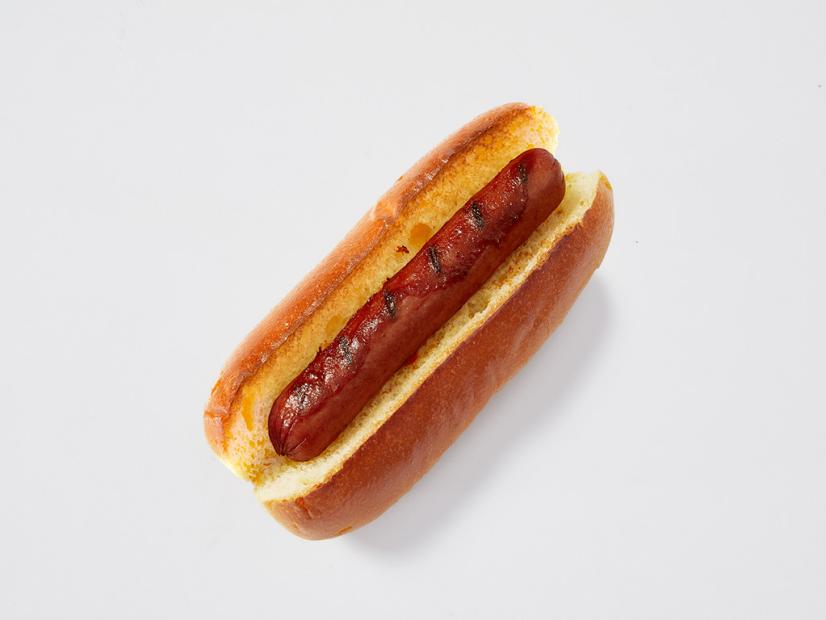

Simple Hot Dog Recipe
Description
This is just a plain hotdog recipe
Ingredients:
- Hotdog bun
- Some Franks
- Various Condiments
- Optional: American Cheese
- Butter
Steps:
- Take a hotdog bun and open it and spread some butter inside. Just a little
- Preheat a skillet with a tiny bit of oil and when it's hot enough, take a frank or two and split it open with a knife before placing in the skillet for 5-8 minutes
- Toast the bun face down and open inside the skillet until slightly browned
- Remove the frank and the bun and put them together
- Add some condiments